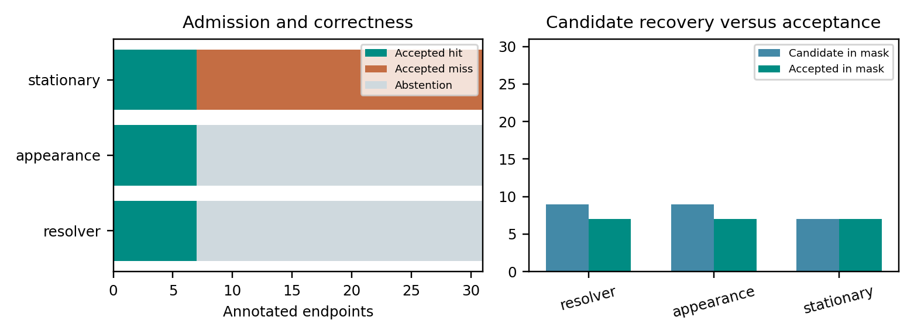
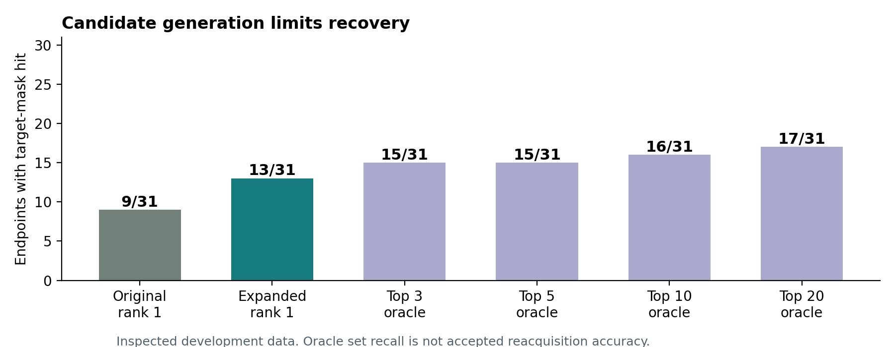

Preserve
An immutable query crop retains observed color and texture. A rejected match cannot overwrite it.
Remember what was observed.
Resolve what can be verified.
A persistent object record retains appearance and accepted position history through occlusion. Reappearance is tested against that record; unresolved positions remain hypotheses.
Executed classical prototype · 22 clips / 31 annotated endpoints · No new learned model

An immutable query crop retains observed color and texture. A rejected match cannot overwrite it.
Multi-scale correlation and color matching propose a reappearance. Two consistent frames are required before the last supported state is updated.
Expose stationary, motion and local-context alternatives. Request a clearer view when support is missing. These are uncalibrated hypotheses.

31 sparse target-mask endpoints from 22 eligible local TCOW Rubric Office clips. Every eligible endpoint is included; no synthetic image occluder is applied.
Supported answers, rather than all candidate guesses.
Only seven answers were accepted. This is not a population guarantee.
Most endpoints remain unresolved. Low coverage is the main limitation.
| Method | Candidate hits | Accepted hits | Accepted misses | Abstain |
|---|---|---|---|---|
| Occlusion resolver | 9 | 7 | 0 | 24 |
| Appearance only | 9 | 7 | 0 | 24 |
| Stationary center | 7 | 7 | 24 | 0 |
Confirmation did not improve the endpoint totals over appearance alone. The hypotheses are currently exposed for inspection; they do not rerank candidates. This release does not establish novel state-of-the-art performance or exact hidden localization.

Expanded candidate search places the top-ranked center inside the target mask at 13 of 31 endpoints, compared with 9 for the original search. A 20-candidate set contains a hit at 17 endpoints. These are inspected-data diagnostics, not verified reacquisition gains.

Research direction: verify object identity using uncertain scene-relation hypotheses. This mechanism has not yet been established. The current paper documents the classical prototype; the linked research plan defines the next experiments and stopping criteria.
The scene explorer retains archived CoTracker3 and CoTracker2 outputs on three clips. These use offline prefixes and different query supervision; they are qualitative context, not a matched 22-clip leaderboard. New resolver code takes no future frames or endpoint masks.
Data and related task: TCOW — Tracking Through Containers and Occluders in the Wild. The new code is a classical causal prototype, with no physical Ameca deployment or learned transfer.